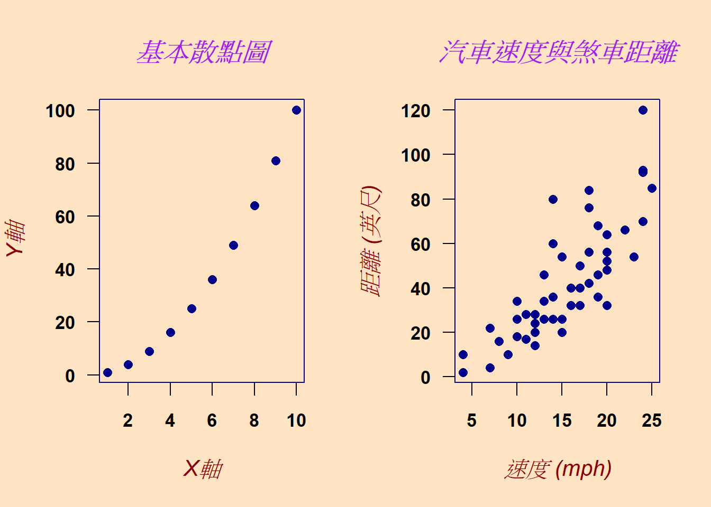
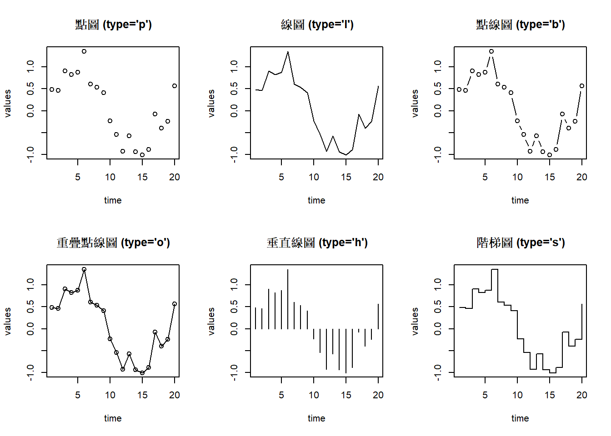
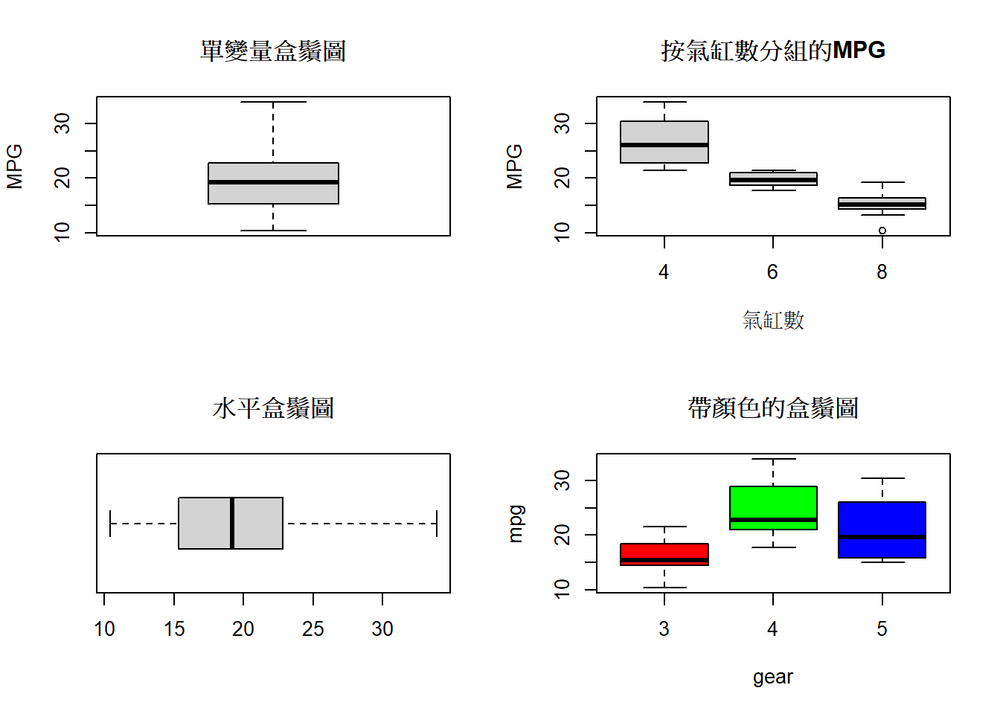
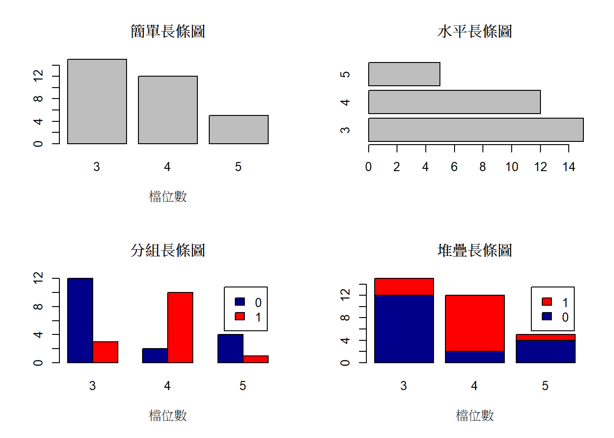
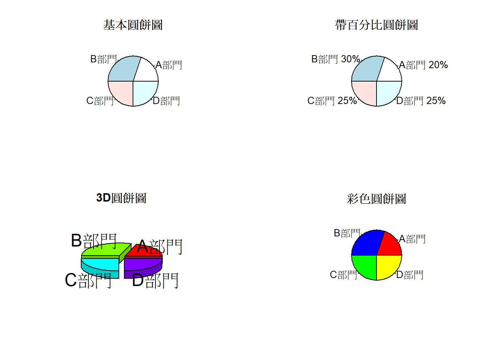

Chapter 8 基礎繪圖
R語言擁有強大而靈活的圖形系統，能夠建立高品質的統計圖形。本章將介紹R的基礎繪圖系統（Base Plotting System），這是R內建的繪圖功能，無需安裝額外套件即可使用。
8.2 基本繪圖函數 plot()
8.2.1 plot()函數介紹
plot()是R中最常用的繪圖函數，它能根據輸入資料的類型自動選擇適當的圖形類型。
以下是plot()參數簡易說明:
# R 基本繪圖函數 plot() 參數說明
plot(
x, y = NULL, # x 與 y 座標資料
type = "p", # 繪圖類型
xlim = NULL, # x 軸範圍
ylim = NULL, # y 軸範圍
log = "", # 對數軸："x"、"y" 或 "xy"
main = NULL, # 主標題
sub = NULL, # 副標題
xlab = NULL, # x 軸標籤
ylab = NULL, # y 軸標籤
ann = par("ann"), # 是否顯示默認註解（標題和軸標籤）
axes = TRUE, # 是否繪製 x、y 坐標軸
frame.plot = axes, # 是否繪製圖框
panel.first = NULL, # 主圖前先畫的內容（背景格線等）
panel.last = NULL, # 主圖後、軸與標題前畫的內容
asp = NA, # 圖形縱橫比（y/x 比例）
xgap.axis = NA, # x 軸刻度與資料之間的間隙
ygap.axis = NA, # y 軸刻度與資料之間的間隙
col, # 點和線的顏色
bg, # 點符號的背景填充色（僅對某些pch有效）
pch, # 點符號形狀（0-25為預定義符號）
cex, # 點符號和文字縮放倍數
lwd # 線寬
lty, # 線條類型（1實線,2虛線等）
cex.main, # 主標題縮放倍數
col.lab, # 軸標籤顏色
font.sub, # 副標題字體
...) # 其他圖形參數範例: 自動選擇適當的圖形類型
# 圖形佈局
par(mfrow = c(1, 2)) # 設定1行2列的圖形佈局
# 基本散點圖
x <- 1:10
y <- x^2
plot(x, y, main = "基本散點圖", xlab = "X軸", ylab = "Y軸")
# 使用內建資料集
plot(cars$speed, #X軸資料
cars$dist, #Y軸資料
main = "汽車速度與煞車距離", #圖片標題
xlab = "速度 (mph)", #X軸標題
ylab = "距離 (英尺)") #Y軸標題
8.2.2 全域參數設定 par()
plot() 可設定各別圖片的參數，但若想多個圖片有統一的樣式，可使用par()函數用於設定圖形的全域參數
# 設定圖形參數
par(
mfrow = c(1, 2), # 設定布局
bg = "bisque1", # 背景色
col = "darkblue", # 預設顏色
col.axis = "black", # 座標軸顏色
col.lab = "darkred", # 標籤顏色
col.main = "purple", # 標題顏色
font.axis = 2, # 座標軸字體 (2=粗體)
font.lab = 3, # 標籤字體 (3=斜體)
font.main = 4, # 標題字體 (4=粗斜體)
las = 1, # 標籤方向 (1=水平)
pch = 16, # 點形狀
cex = 1.2, # 符號大小
cex.axis = 0.9, # 座標軸文字大小
cex.lab = 1.1, # 標籤文字大小
cex.main = 1.3 # 標題文字大小
)
# 繪製圖形
x <- 1:10
y <- x^2
plot(x, y, main = "基本散點圖", xlab = "X軸", ylab = "Y軸")
# 使用內建資料集
plot(cars$speed, #X軸資料
cars$dist, #Y軸資料
main = "汽車速度與煞車距離", #圖片標題
xlab = "速度 (mph)", #X軸標題
ylab = "距離 (英尺)") #Y軸標題
8.2.3 圖形類型設定
plot雖然可以自動選擇適當的圖形類型，但也可透過type參數可以指定不同的圖形類型：
# 建立範例資料
time <- 1:20
values <- sin(time/3) + rnorm(20, 0, 0.2)
# 不同的圖形類型
par(mfrow = c(2, 3)) # 設定2行3列的圖形佈局
plot(time, values, type = "p", main = "點圖 (type='p')")
plot(time, values, type = "l", main = "線圖 (type='l')")
plot(time, values, type = "b", main = "點線圖 (type='b')")
plot(time, values, type = "o", main = "重疊點線圖 (type='o')")
plot(time, values, type = "h", main = "垂直線圖 (type='h')")
plot(time, values, type = "s", main = "階梯圖 (type='s')")
8.2.4 顏色設定
plot()中有多種方式指定顏色，可使用col參數 來呈現顏色：
# 顏色示範
par(mfrow = c(2, 2))
# 1. 使用顏色名稱
plot(1:5, rep(1,5), pch=16, cex=3, col=c("red","blue","green","yellow","purple"),
main = "顏色名稱", xlab="", ylab="")
# 2. 使用RGB值
plot(1:5, rep(1,5), pch=16, cex=3,
col=rgb(red=1:5/5, green=0, blue=0),
main = "RGB顏色", xlab="", ylab="")
# 3. 使用十六進位值
plot(1:5, rep(1,5), pch=16, cex=3,
col=c("#FF0000", "#00FF00", "#0000FF", "#FFFF00", "#FF00FF"),
main = "十六進位顏色", xlab="", ylab="")
# 4. 使用調色盤
palette(rainbow(5))
plot(1:5, rep(1,5), pch=16, cex=3, col=1:5,
main = "調色盤顏色", xlab="", ylab="")
8.2.5 點形狀和線型
- 線型參數
- lty = 線條形狀 （1～20）
- lwd = 線條尺寸
- 控制點參數
- pch= 控制點形狀（1～25）
- cex= 控制大小
- 點與線之各類樣式

# 設定圖形佈局
par(mfrow = c(2, 2), mar = c(4, 4, 3, 1))
# 1. 基本折線圖
x <- 1:10
y1 <- c(2, 4, 6, 8, 7, 5, 6, 8, 10, 12)
plot(x, y1, type = "o", col = "blue", lwd = 2, pch = 16,
main = "基本折線圖", xlab = "X軸", ylab = "Y軸")
grid() # 添加網格線
# 2. 不同線型的折線圖
y2 <- c(1, 3, 5, 4, 6, 8, 9, 7, 8, 10)
plot(x, y1, type = "l", lty = 1, col = "red", lwd = 2,
main = "不同線型比較", xlab = "X軸", ylab = "Y軸")
lines(x, y2, type = "l", lty = 2, col = "blue", lwd = 2)
legend("topleft", legend = c("實線", "虛線"),
col = c("red", "blue"), lty = 1:2, lwd = 2)
# 3. 簡單散點圖
set.seed(123)
x_scatter <- 1:20
y_scatter <- 2 * x_scatter + rnorm(20, 0, 3)
plot(x_scatter, y_scatter, pch = 16, col = "darkgreen", cex = 1.2,
main = "簡單散點圖", xlab = "X軸", ylab = "Y軸")
# 4. 多組數據散點圖
group1_x <- rnorm(15, 5, 1)
group1_y <- rnorm(15, 5, 1)
group2_x <- rnorm(15, 8, 1)
group2_y <- rnorm(15, 8, 1)
plot(group1_x, group1_y, pch = 16, col = "red", cex = 1.2,
main = "兩組數據散點圖", xlab = "X軸", ylab = "Y軸",
xlim = c(2, 11), ylim = c(2, 11))
points(group2_x, group2_y, pch = 17, col = "blue", cex = 1.2)
legend("topleft", legend = c("組別A", "組別B"),
col = c("red", "blue"), pch = c(16, 17))
8.3 其他常見統計圖形
8.3.1 直方圖hist()
# 直方圖
set.seed(123)
data <- rnorm(1000, mean=50, sd=10)
par(mfrow = c(2, 2))
hist(data, main = "預設直方圖")
hist(data, breaks = 20, main = "20個分組", col = "lightblue")
hist(data, probability = TRUE, main = "機率密度", col = "lightgreen")
lines(density(data), col = "red", lwd = 2) # 添加密度曲線
hist(data, main = "自訂顏色",
col = c("red", "blue", "green", "yellow", "purple"))
8.3.2 盒鬚圖 boxplot()
# 盒鬚圖
par(mfrow = c(2, 2))
# 基本盒鬚圖
boxplot(mtcars$mpg, main = "單變量盒鬚圖", ylab = "MPG")
# 分組盒鬚圖
boxplot(mpg ~ cyl, data = mtcars,
main = "按氣缸數分組的MPG",
xlab = "氣缸數", ylab = "MPG")
# 水平盒鬚圖
boxplot(mtcars$mpg, horizontal = TRUE, main = "水平盒鬚圖")
# 帶顏色的盒鬚圖
boxplot(mpg ~ gear, data = mtcars, col = rainbow(3),
main = "帶顏色的盒鬚圖")
8.3.3 長條圖 barplot()
# 長條圖
par(mfrow = c(2, 2))
# 簡單長條圖
counts <- table(mtcars$gear)
barplot(counts, main = "簡單長條圖", xlab = "檔位數")
# 水平長條圖
barplot(counts, horiz = TRUE, main = "水平長條圖")
# 分組長條圖
counts2 <- table(mtcars$vs, mtcars$gear)
barplot(counts2, main = "分組長條圖",
xlab = "檔位數", col = c("darkblue","red"),
legend = rownames(counts2), beside = TRUE)
# 堆疊長條圖
barplot(counts2, main = "堆疊長條圖",
xlab = "檔位數", col = c("darkblue","red"),
legend = rownames(counts2), beside = FALSE)
8.3.4 圓餅圖 pie()
# 圓餅圖
par(mfrow = c(2, 2))
# 基本圓餅圖
slices <- c(20, 30, 25, 25)
lbls <- c("A部門", "B部門", "C部門", "D部門")
pie(slices, labels = lbls, main = "基本圓餅圖")
# 帶百分比的圓餅圖
pct <- round(slices/sum(slices)*100)
lbls2 <- paste(lbls, " ", pct, "%", sep="")
pie(slices, labels = lbls2, main = "帶百分比圓餅圖")
# 3D圓餅圖（需要plotrix套件）
# install.packages("plotrix")
library(plotrix)
pie3D(slices, labels = lbls, explode = 0.1, main = "3D圓餅圖")
# 自訂顏色圓餅圖
colors <- c("red", "blue", "green", "yellow")
pie(slices, labels = lbls, col = colors, main = "彩色圓餅圖")
8.4 多圖佈局

8.5 圖形註解與文字
8.5.1 添加文字和標題
# 圖形註解
plot(1:10, 1:10, type = "n", main = "圖形註示例", xlab = "X", ylab = "Y")
# 添加點
points(5, 5, pch = 16, cex = 2, col = "red")
# 添加文字
text(5, 5, "中心點", pos = 1, col = "red") # pos=1 表示在點下方
text(2, 8, "左上文字", adj = 0, col = "blue")
text(8, 2, "右下文字", adj = 1, col = "darkgreen")
# 添加數學公式
text(5, 9, expression(bar(x) == sum(frac(x[i], n), i==1, n)), cex = 1.2)
# 添加圖例
legend("bottomright", legend = c("類別 A", "類別 B"),
pch = c(16, 1), col = c("red", "blue"), title = "圖例")
# 添加網格
grid()
8.5.2 添加額外線條和形狀
# 線條和形狀
plot(1:10, type = "n", xlim = c(0, 11), ylim = c(0, 11),
main = "線條和形狀示例", xlab = "X", ylab = "Y")
# 添加水平線和垂直線
abline(h = 5, col = "red", lty = 2, lwd = 2) # 水平線
abline(v = 5, col = "blue", lty = 2, lwd = 2) # 垂直線
abline(a = 0, b = 1, col = "green", lwd = 2) # 斜率為1的直線
# 添加線段
segments(x0 = 2, y0 = 2, x1 = 8, y1 = 8, col = "purple", lwd = 3)
# 添加箭頭
arrows(x0 = 1, y0 = 9, x1 = 3, y1 = 7, col = "orange", lwd = 2, length = 0.1)
# 添加多邊形
polygon(x = c(7, 9, 8), y = c(2, 2, 4), col = "pink", border = "red")
# 添加矩形
rect(xleft = 1, ybottom = 8, xright = 3, ytop = 10,
col = "lightblue", border = "darkblue")